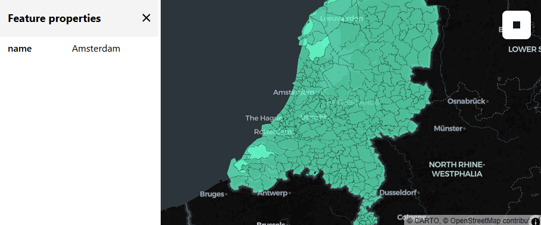
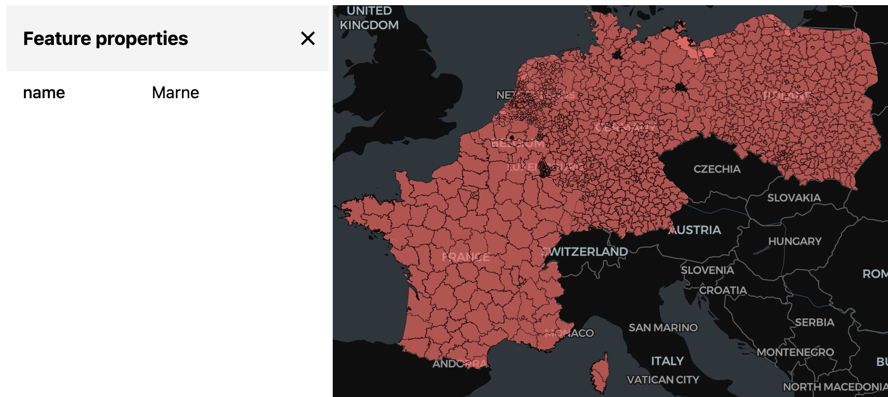

Visualize a geospatial Delta Lake table with Lonboard
The below example uses a column where the geometries are stored as WKB in a BINARY column. If you have a table using the newer GEOMETRY or GEOGRAPHY types, you can use the same logic but first use st_asbinary(), as well as st_transform(..., ..., 4326) as needed.
Lonboard is an excellent tool to visualize geospatial data via Arrow or DuckDB. While it cannot visualize as large datasets as you can with using streaming Flatgeobuf or PMTiles, it can go far – theoretically the driver’s memory, your browser’s memory and your network is the limit. On Databricks, however, there is a quite frugal limit for the sizes of widgets, so we’ll have to limit the sample dataset a bit more, or you can generate a separate HTML file instead.
import duckdb
from lonboard import viz
def spark_viz(df, wkb_col="geometry", other_cols=None, limit=10_000, output_html=None):
# needs `%pip install duckdb lonboard shapely`
if other_cols is None:
other_cols = []
try:
duckdb.load_extension("spatial")
except duckdb.duckdb.IOException:
duckdb.install_extension("spatial")
duckdb.load_extension("spatial")
dfa = df.select([wkb_col] + other_cols).limit(limit).toArrow()
if dfa.num_rows == limit:
print(f"Data truncated to limit {limit}")
query = duckdb.sql(
f"""select * replace (st_geomfromwkb({wkb_col}) as {wkb_col})
from dfa
where {wkb_col} is not null"""
)
if output_html is None:
return viz(query).as_html()
else:
viz(query).to_html(output_html)
return output_htmlIn-notebook widget example
Note that we use quite conservative limits, only a few hundred polygons – for vizualising more, see the HTML export option below.
This example uses the CARTO/Overture Maps datasets that you can add to your workspace via the Marketplace.
The CARTO/Overture Maps tables are stored in us-west-2 as of writing, so if you are not using Databricks Free Edition and you are in any other region, you will have to pay egress charges based on the amount of data you read.
# Example dataset: Municipalities in the Netherlands via Overture Maps
df = (
spark.table("carto_overture_maps_divisions.carto.division_area")
.selectExpr("geometry", "names:primary::string as name")
.where("""country = 'NL' and subtype='county'""")
)
spark_viz(df, wkb_col="geometry", other_cols=["name"], limit=1000)
If all went well and you see data on the map (not only the screenshot): note that you can not just zoom and pan, but can also click on a polygon to see the value of the non-geometry column(s).
If you receive the error:
Command result size exceeds limit: Exceeded XXXX bytes (current = XXXX)Then you need to reduce your limit or tighten your filter.
Export to HTML
To see much more data at the same time (than what fits within Databricks’ widget size limits), we can generate a HTML file to a Volume, download and open that file. If you want to avoid downloading, you could serve it via Databricks Apps instead, see the html-viewer app here – note, however, the the data to visualize still needs to travel through the network to your browser anyway.
You will see that you can use this method to generate HTML files of hundreds of megabytes – so then the limit becomes your local memory for what your browser can open.
df = (
spark.table("carto_overture_maps_divisions.carto.division_area")
.selectExpr("geometry", "names:primary::string as name")
.where(
"""
country in ('BE', 'NL', 'LU', 'DE', 'FR', 'PL', 'CZ', 'SK', 'CH')
and subtype='county'"""
)
.orderBy("name") # just to make the results reproducible
)
spark_viz(
df,
wkb_col="geometry",
other_cols=["name"],
limit=100_000,
output_html="/Volumes/workspace/default/default/output.html",
)Downloading the above html and opening it, we can see much more data than what fits into an inline widget:

Using DuckDB
If you are working with DuckDB (instead of Databricks SQL), you can directly feed in a DuckDB query to lonboard, without having to handle arrow yourself – after all, there’s already DuckDB used inside the above example.
So replicating the above example with DuckDB only, using the Overture Maps dataset on S3 (instead of the mirror on Databricks):